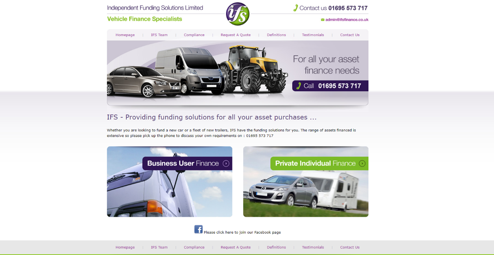
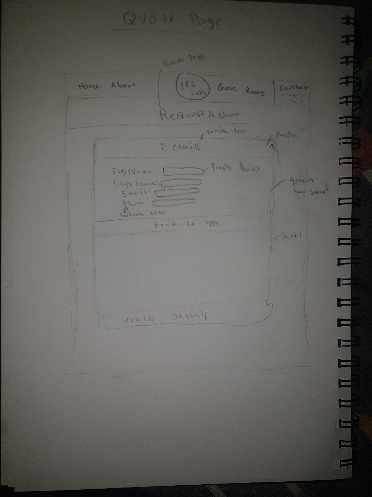
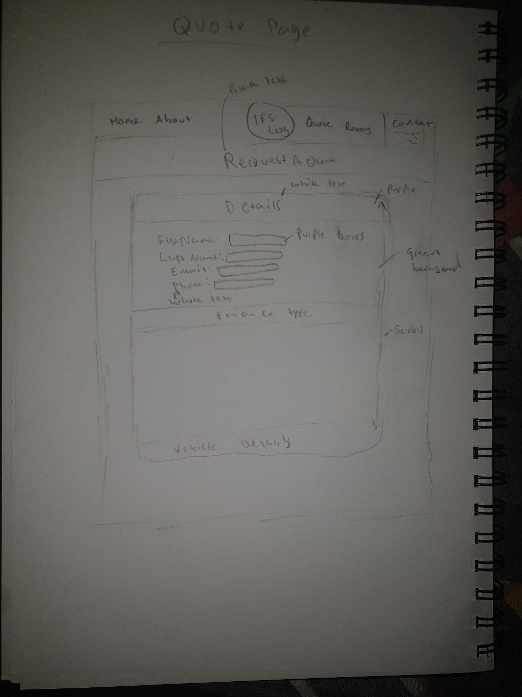
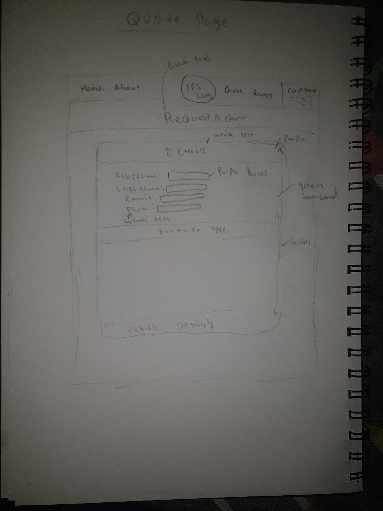

This project is about finding a local business website and then completely changing and redesigning how it looks.
The goal is to modernise and include better features than currently on the website, so it can better do the tasks it was made to do.

Choosing the Website
This website was selected because it is very outdated compared to other websites within the local area.
At first glance, it is easy to tell that the website is very old and was something which was created a long time ago,
the site still uses tables which is something which is avoided by most designers, for this reason this website seems like the perfect candidate to redesign for.
New designs will make use of Grid CSS, to modernise the website not only will this make the website more appealing,
but it also allows the website to compete with other modern websites. Other than the website being made using tables,
there are also many other problems which could be fixed throughout the whole website, there seems to be some sort of problem which can be fixed and improved on every single page throughout the website.
If IFS have other competitors they would ultimately lose if their competitors put a higher budget on their website and used modern techniques,
the goal of this project is to bring IFS Limited up to par with modern websites so they can compete.
Homepage
When first looking at this page, there seems to be a lot of white space a lot of information can be put into this whitespace,
or content already within the page could extend along the white space,
whereas whitespace could increase the readability of a website too much whitespace could leave the user feeling underwhelmed and bored because of the lack of content within these white areas.
The website is also not responsive,
so if a user is viewing the website on a mobile phone or any other device which isn’t the same aspect ratio of a computer monitor they would have a hard time browsing through the website due to the amount of scrolling they would have to do,
The text is also very hard to read when it comes to the mobile view in terms of the navigation bar and footer.
If a monitor has a low resolution, or the browser size is reduced the website does not respond to this, making it very hard to browse through.
Image sizes also seem to be exactly the correct size,
which means they don’t increase in quality on monitors with a higher resolution,
this could leave an underwhelming impression on new customers visiting the website.
There is also a navigation bar at the top and the bottom of the web page,
this isn’t seen on many modern websites and is something which doesn’t look as professional,
instead having a sticky navigation bar or having a button which takes you to the top of the webpage would make more sense.
On the homepage especially there is no need for the navigation bar at the bottom of the page as the page doesn’t scroll far enough to not be able to see the one on the top of the page.
IFS Team
Next is the Team page, once again there is a lot of white space on the right side of the page however
the left side seems to have been filled with some information regarding contact information.
There is a lot of unnecessary contact information all throughout the page,
there is a contact page, contact info on the banner as well as contact info on each page,
this information is unnecessary, and the space could be put to better use.
The images and information seem to be good; it allows the user to get to know the staff and what they do within the company however it seems boring;
the colours are too simple, and users may get overwhelmed with the amount of text at first glance.
The images do their purpose however they could be edited or taken in a higher quality to enhance the website.
Compliance
The compliance page has the same header and navigation bar along with the contact information on the left, however these it way too much text, users aren’t going to want to read a page with which is overwhelmed with text and no images or features to support the text. The information on this page could also be moved to two different pages an about us page and a help page as it gives information about the company as well as helpful questions and answers.
There is also a lot of repetitiveness about heir contact details. The details are displayed on the left side of the page however once again displayed under “who are we?” Unnecessary space is being taken up when there is no need for it.
Request a Quote
This page has a form in order to request a quote, there could be some additional pointers a the top of the page to help with the form as it can seem long and scary to some users especially when there’s no use of different colours, the text is also very small and could be hard to read for some users. There is also no images apart from the same one used on every page underneath the contact information to the left.
Definitions
This page has a lot of text and not enough images to follow the text, the page goes on for a long time and it feels like there’s too much information to take in for the user, there also seem to be no use of different colours and everything is black and white with a small font style. Most users would visit this page read the first paragraph and then click off the website because of how simplistic it is. Once again, the contact information is repeated within the first paragraph even though there is a display of the contact information to the left side as well as the header above the navigation bar.
Testimonials
This page has reviews of previous clients, all of them seem positive to better advertise the company, Once again it seems there is too much text, no images and hardly any colour with a small font size; as stated earlier this can make the users feel uncomfortable and less inclined to read the whole page because of how boring it seems. Increased font size, better placement and more use of colours could better showcase these testimonials.
Contact
Like all the other pages, this one is once again simple. It has an email form for users to fill out, unlike the other pages the phone number has not been duplicated as there’s one already there on the left side of the website.
The navigation bar has been duplicated at the bottom of the page, as stated earlier this is not necessary as there is no scroll on the page.
User Stories
Sketches

MoodBoard
This is a mood board created for the website. The use of purple, green and white would stay consistent throughout the website as they are the colours of the logo, and the business brand in general. They aren’t exactly the right shade of colours used within the logo, however the lighter colours chosen would look better throughout the website. The background is also a very light tint of green followed by a more adamant green for other shapes and texts.
The banners and images above are from the original website and can be reused within the redesign, however underneath are better high quality images which could be used instead. At the top are two different fonts which could be used all throughout the website, These fonts would look better on the website that the one currently used on their old site. Some logos have also been created for the contact page, this is because the website seems adamant about getting customers to contact them, and if there are some eye catching logo’s, this would increase the chances of users actually contacting the business.
Prototyping
Developement
The whole process of development is recorded within Git-hub, refer to git-hub to see stages of how pages were coded and when things were added throughout the webpage, commits where made after developing every single page. Good use of comments have been made all throughout the code explaining what each section does.
Homepage
About
Quote
Help
Reviews
Contact
Testing
Conclusion
To conclude, the website had been completely redesigned and modernized compared to the original website, which was using Tables, the new one which has been created through this project uses Grid CSS which is something that is used in most modern websites. The new website looks modernized and immediately catches the eyes of new users who would like to visit the site. Unlike the old website where everything is plain, and there’s too much text and repetition. The new website reduces the amount of time text by only having it where it’s needed, such as the contact information, it is only within the contact page or other pages if it’s necessary. The huge amounts of text have also been reduced so users don’t get overwhelmed. Users are much more likely to use and stay on the website created during this project rather than the older one which is currently live as the problems it had have been solved.


 
